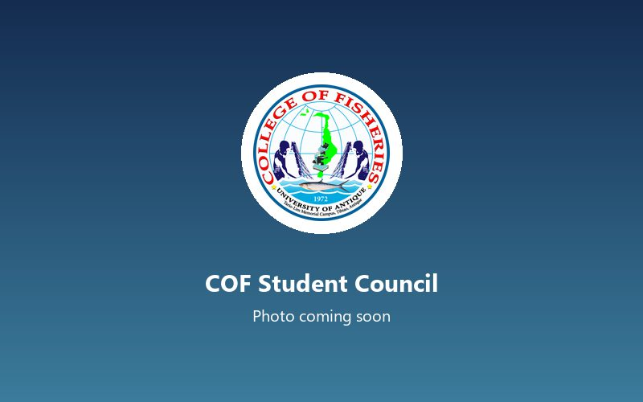
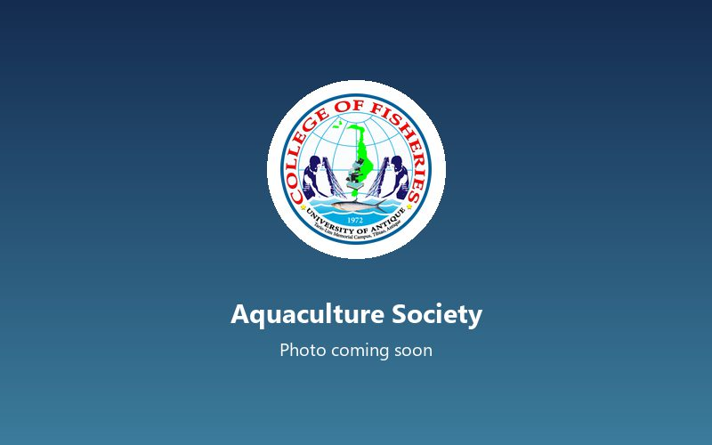
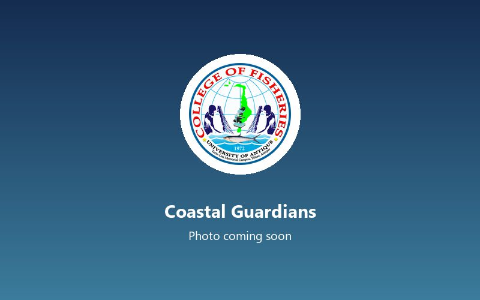

Growth Performance of Nile Tilapia (Oreochromis niloticus) Fed with Fermented Azolla-Based Diets
Q1 2026Completed
The College of Fisheries trains fisheries professionals for the coastal communities of northern Antique, with hands-on work in aquaculture, capture fisheries, post-harvest technology and coastal resource management.
Garner Algo L. Alolod, PhDDean, College of Fisheries

Dean, College of Fisheries
Program Head, Bachelor of Science in Fisheries
Choose a program to see its accreditation, objectives, curriculum and faculty.
[Program educational objectives for this program go here.]
Program Head, BSF
Associate Professor II
Assistant Professor III
Assistant Professor I
Instructor III
Courses based on the CHED policies, standards and guidelines for each program. The official prospectus with year levels, semesters and units is available from the college.
Enrollment per program for the last three academic years.
| Program | A.Y. 2023–2024 | A.Y. 2024–2025 | A.Y. 2025–2026 | Change from last year |
|---|---|---|---|---|
| Bachelor of Science in Fisheries | 186 | 204 | 231 | +27 (+13.2%) |
| Total | 186 | 204 | 231 | +27 (+13.2%) |

Represents all fisheries students and leads college-wide activities

Pond and hatchery projects, fish-feed trials and study visits

Coastal clean-ups and mangrove planting with partner barangays
COF building, 8:00 AM, 2026
Coastal barangay partner site, 6:00 AM, 2026
Campus audio-visual room, 1:00 PM, 2026